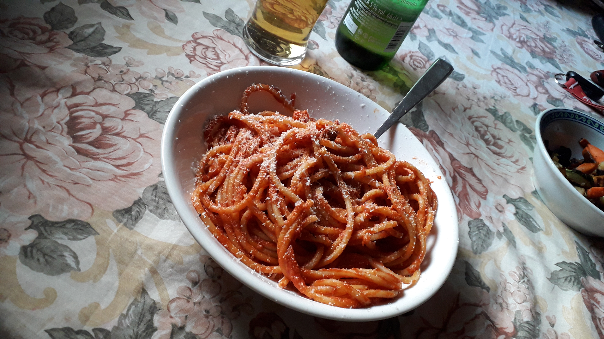

Amatriciana Pasta

Description
Amatriciana pasta derives it's name from Amatrice, a town in Abruzzo where this pasta originates from
Ingredients
- 200g Bucatini Pasta
- 200g Peeled Tomatoes
- 10g Salt
- 100g Guanciale
- 1 Whole Chilli Pepper
- 1/2 Glass Of Cooking Wine
- Pecorino Cheese
Steps
- Bring a pot of water to a rolling boil
- Add salt to the water and proceed to add the pasta
- In a pan, heat up the guanciale until the fat is transparent
- Break apart the peeled tomatoes and add them to the pan with guanciale
- Lower the heat and let the sauce simmer, adding a dash of wine and chilli pepper
- Once the sauce is sufficiently reduced, strain the pasta and mix it with the sauce
- Sprinkle with pecorino cheese to taste>